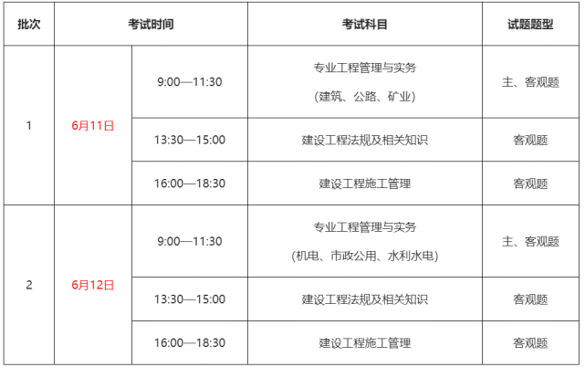
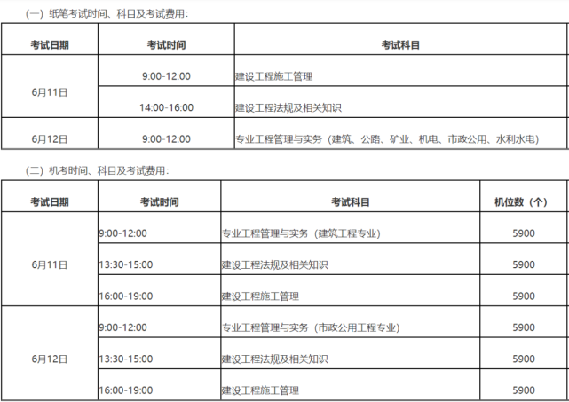
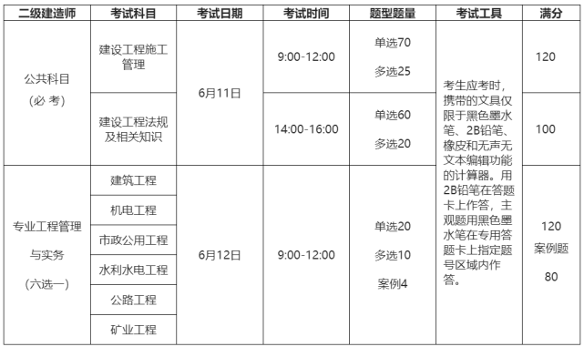

二建考试一直处于改革浪尖，2022年的二建考试裂变为3种形式：笔试（常规)、笔
试(1天考3科)、机考。本年度二级建造师考试分成这三个模式进行，每个模式均
有所属省份，具体内容如下所示。 |
|  |
模式一►
笔试（常规）
考试形式：2天3科
目前包含地区（15个)：甘肃、宁夏、湖北、四川、浙江、江西、广西、山东、湖南、黑龙江、吉林、河南、辽宁
、新疆、西 藏。
考试安排：2022年二级建造师考试于6月11、12日举行，具体考试时间、科目、题型、题量、分值等内容见表格。
|
|  |
模式二►
笔试（分两批、考试时间缩短）
考试形式：1天3科
目前包含地区(10个)：重庆、江苏、陕西、广东、安徽、海南、内蒙古、河北、北京、青海
2022年二级建造师考试按《专业工程管理与实务》科目所选专业分2天2个批次实施，各科目考
试时长缩短了半个小时/科，专业实务调整至上午考。具体考试时间见表格。 |
|  |
模式三►
机考
目前包含地区：贵州、云南、福建
贵州考试安排：
2022年度贵州省二级建造师职业资格考试实行机考，考试时间原定为4月9日-4月10日，
4月16日-4月17日两个时间段，现受疫情防控影响推迟，各目开考时间另行通知，报考人
员的考试时间、考点等信息请以准考证为准。 云南考试安排：2022年二级建造师考试考试
于6月11、12日举行，按《专工程管理与实务》科目所选专业分2天2个批次实施，各科
目考试时长缩短了半个小时/科，专业实务调整至上午考 |
s